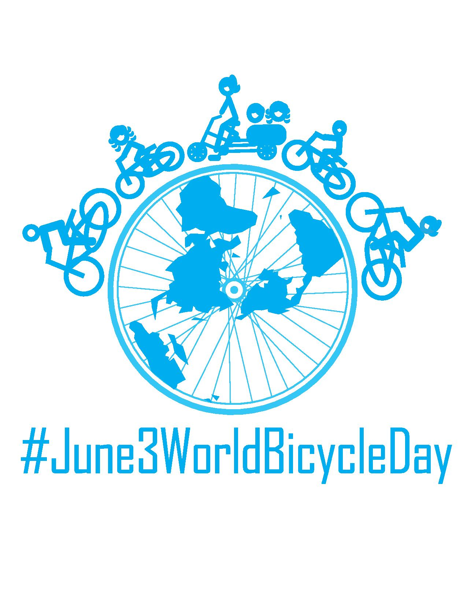
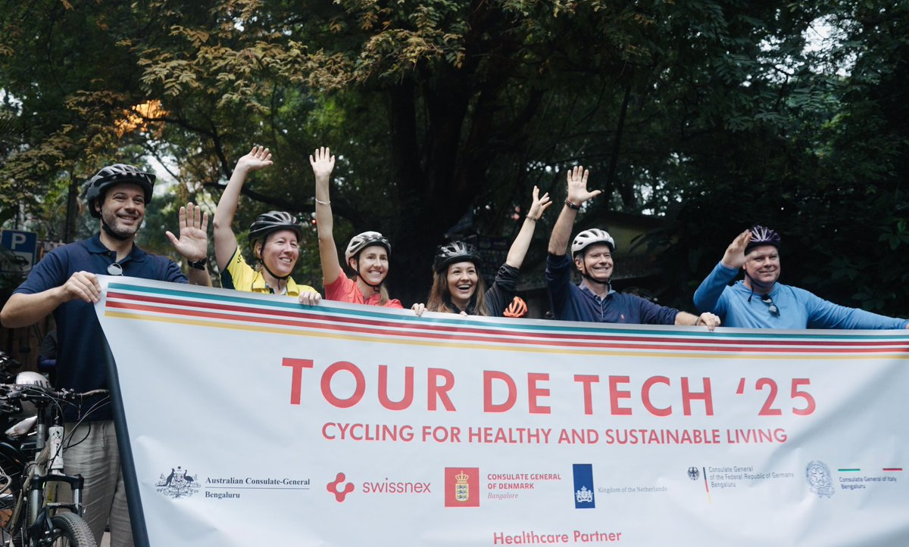

Bicycle parking facilities
Planning and implementing secure bicycle parking infrastructure across the city to support cycling as a viable mode of transportation.

Planning and implementing secure bicycle parking infrastructure across the city to support cycling as a viable mode of transportation.

Strategic partner to India UK Joint Center of Excellence between ENergy SYstems Catapult, UK and Indian Insitute of Science. Research and innovation initiative focused on developing sustainable transport and energy solutions for urban environments.

Establishing a center of excellence dedicated to research, innovation, and capacity building in active mobility. Setup under an MoU between Urban Morph and Indian Insitutte of Science Sustainable Transport Lab.

Developing guidelines for sustainable practices in cultural institutions, including mobility and accessibility recommendations.
By Subbaiah TS, Nidhi KS, Karthik SK
Sustainable Museums flipbook
The AltMo digest, Released on June 3rd World Bicycle Day 2023, with a foreword from the commissioner of Directorate of Urban Land Transport, Government of Karnataka, takes you through the journey of all the cycling related progress Bengaluru has made.
By Sathya Sankaran, Nidhi KS, Anoushka S
AltMo Digest flipbook
Initiative to create slow-speed streets prioritizing pedestrians and cyclists over motorized traffic in residential neighborhoods.

India's premier Urban affairs podcast hosted by Sathya Sankaran. A series of conversations exploring urban issues, mobility challenges, and innovative solutions for building better cities.
By Sathya Sankaran
Watch here
Alternative Mobility initiative promoting sustainable transportation solutions and active mobility across Bengaluru.

Mapping existing and planned cycling routes, pedestrian pathways, and public transit to create an integrated mobility network.

Digital dashboard for planning and tracking electric vehicle charging infrastructure deployment across the city.

A challenge campaign encouraging citizens to adopt alternative modes of transportation and reduce car dependency.

Exploring the transition from personal to public spaces through cycling initiatives and infrastructure development.

Pilot project implementing school streets to create safer, car-free zones around schools during drop-off and pick-up times.

Celebrating and highlighting individuals and organizations championing cycling and sustainable mobility in Bengaluru.

Educational program teaching cycling skills and road safety to children and adults, promoting cycling as a safe mode of transport.

Regular community cycling events bringing together residents to explore neighborhoods and promote cycling as a daily transport option.

Comprehensive campaign encouraging Bengaluru residents to adopt active mobility and sustainable transportation choices.

Training program providing cycling education, safety skills, and confidence building for new and returning cyclists.

Engaging with local elected representatives to promote active mobility initiatives and sustainable transportation policies at the ward and city level.

Regular newsletter sharing updates, insights, and stories from the Coalition for Active Mobility community.

Exploring the 15-minute city concept where essential services and amenities are accessible within a short walk or bike ride.

Initiative focused on reducing air pollution through promoting active mobility and sustainable transportation alternatives.
Testbed report
Participation and engagement in India Energy Week 2025, showcasing sustainable mobility and energy solutions.

Panel discussions and advocacy efforts around the Active Mobility Bill to promote policy changes for better cycling and walking infrastructure.

Community cycling event bringing together cycling enthusiasts and advocates to celebrate and promote cycling culture.

Safety campaign focused on protecting cyclists and pedestrians through awareness, infrastructure improvements, and policy advocacy.

Community-driven initiative to reclaim and improve neighborhood streets for walking, cycling, and social interaction.

Engagement with the Dutch Prime Minister's visit to showcase Bengaluru's cycling initiatives and learn from Dutch cycling expertise.

Celebrating World Bicycle Day with events, rides, and awareness campaigns to promote cycling culture and infrastructure.

Marquee cycling event. Cycling tours connecting tech hubs and innovation centers, promoting cycling among the technology workforce.

Series of workshops on urban mobility, infrastructure planning, policy advocacy, and community engagement for sustainable cities.